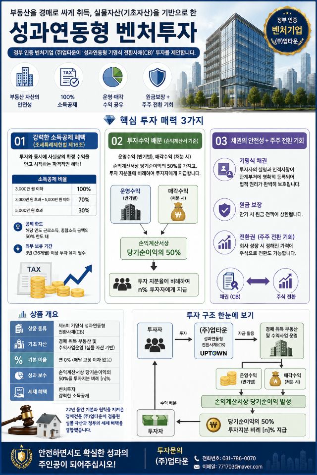

정부 인증 벤처기업 (주)업타운이 「제n회 기명식 성과연동형 전환사채(CB)」 투자를 제안합니다.
* ‘원금 보장’은 발행 조건상 만기 원금 전액 상환 약정을 뜻하는 원자료 표기이며, 발행회사의 상환 능력에 따라 원금 손실이 발생할 수 있습니다. 투자위험 고지

법에서 정한 조건을 충족하는 벤처기업 투자 시 투자금액의 최대 100%를 소득공제
| 구분 | 혜택 | ||
|---|---|---|---|
| 구간별 소득공제율 | 3,000만원 이하 | 3,000~5,000만원 | 5,000만원 초과 |
| 100% | 70% | 30% | |
| 공제한도 | 해당 연도 종합소득금액(근로·사업·종합소득 등)의 50% | ||
| 세제지원 요건 | 3년(36개월) 이상 투자 유지 (의무보유) | ||
※ 소득공제 적용 여부와 범위는 투자 방식, 발행 증권의 종류, 투자 시점의 법령 및 개인별 요건에 따라 달라질 수 있습니다. 투자 전 세무 전문가와 상담하시기 바랍니다.
1,000만원 투자 시 (소득공제 100% 구간, 지방소득세 포함 한계세율 기준)
| 과세표준 | 세율 (지방세 포함) | 투자금 | 소득공제 효과 (절세액) | 투자금 대비 절세율 | 실질 투자금 |
|---|
※ 과세표준이 해당 구간에 충분히 걸쳐 있다고 가정한 한계세율 기준 단순 계산입니다. 정확한 금액은 소득공제 계산기로 확인하세요.
3천만원 투자 시 연말정산/종합소득세에서 최대 약 1,350만원 세금 환급 (실투자금 1,700만원대, 최고세율 구간 기준)
원금을 투자하고 계신 동안 반기별 운영 수익(손익계산서상 당기순이익)의 50% 배당
만기(3년) 내 매각 시 매각이익 50% · 만기 미매각으로 원금 상환 시 매각 시점에 20% · 만기 연장 후 매각 시 70% 배당
💡 한 줄 요약 : 3,000만원 투자 시 세금 환급을 감안한 실질 체감 투자금은 약 1,700만원 수준으로 낮아지며,
경매로 싸게 받은 실물자산 바탕 위에 운영 배당과 매각 차익까지 누립니다.
세금 환급으로만 원금 이상 회수 · 매년 3,000만원 · 소득공제 100% · 환급율 44% 가정
| 구분 | 1차 | 2차 | 3차 | 4차 | 5차 | 6차 | 7차 | 합계 |
|---|---|---|---|---|---|---|---|---|
| 년도 | 2026 | 2027 | 2028 | 2029 | 2030 | 2031 | 2032 | - |
| 투자금액 | 30,000,000 | 30,000,000 | 30,000,000 | 회전 | 회전 | 회전 | 회전 | 90,000,000 |
| 소득공제 | 100% | 100% | 100% | 100% | 100% | 100% | 100% | - |
| 최대환급 | 13,200,000 | 13,200,000 | 13,200,000 | 13,200,000 | 13,200,000 | 13,200,000 | 13,200,000 | 92,400,000 |
| 환급율 | 44% | 44% | 44% | 44% | 44% | 44% | 44% | - |
| 성과보수 | + α (당기순이익의 50% 배분, 매각 차익 배분) | |||||||
※ 4차년도부터는 3년 만기 상환된 원금을 재투자(회전)하는 가정입니다. 과세표준 3억~5억원 구간(44%) 투자자 기준 예시이며 실제 환급액은 개인별로 다릅니다. 재투자 시점의 상품 모집 여부와 세법 일몰·개정에 따라 달라질 수 있습니다.